| # |
BID |
Beatmap Info |
CS |
HP |
OD |
AR |
Hit Length |
BPM |
Stars |
Notes |
| 1 |
2211226 |
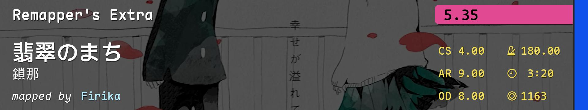 |
4.0 |
6.0 |
8.00 |
9.00 |
3:20 (1163x) |
180.00 |
5.35 |
awkward aim |
| 2 |
4260076 |
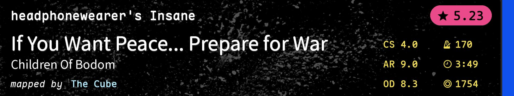 |
4.0 |
5.0 |
8.30 |
9.00 |
3:47 (1754x) |
170.00 |
5.25 |
切串+节奏 |
| 3 |
2097324 |
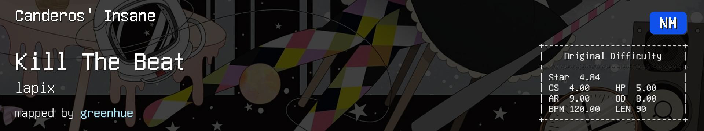 |
4.0 |
5.0 |
8.00 |
9.00 |
1:30 (646x) |
120.00 |
4.84 |
alt（aim） |
| 4 |
2918191 |
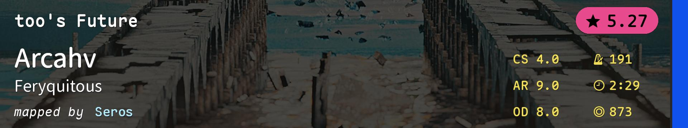 |
4.0 |
5.0 |
8.00 |
9.00 |
2:29 (873x) |
191.00 |
5.27 |
tech（手控） |
| 5 |
4226519 |
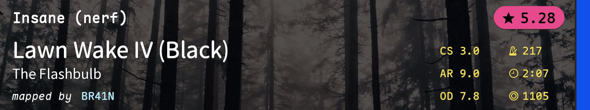 |
3.0 |
5.0 |
7.80 |
9.00 |
2:07 (1105x) |
217.00 |
5.28 |
高速切 |
| 6 |
2022008 |
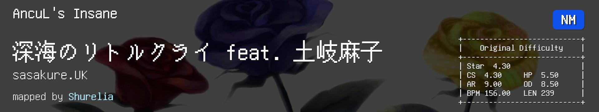 |
4.3 |
5.5 |
8.50 |
9.00 |
3:59 (1161x) |
156.00 |
4.3 |
rhythm |
| 7 |
2470722 |
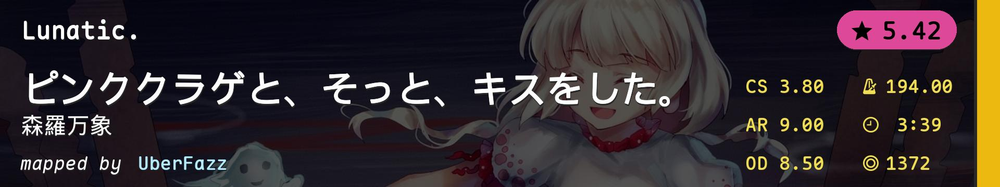 |
3.8 |
5.0 |
8.50 |
9.00 |
3:39 (1372x) |
194.00 |
5.42 |
综合 |
| 8 |
3419840 |
|
4.2 |
5.1 |
7.60 |
8.30 |
2:02 (651x) |
96.00 |
4.86 |
低AR+slider aim |
| 9 |
4093558 |
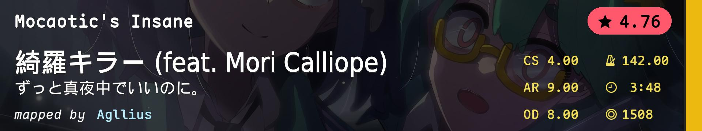 |
4.0 |
3.8 |
8.00 |
9.00 |
3:48 (1508x) |
142.00 |
4.76 |
alt（light tech） |
| 10 |
3969715 |
|
5.2 |
7.0 |
10.00 |
10.00 |
3:31 (1122x) |
205.00 |
5.34 |
重复横跳（aim） |
| 11 |
4572221 |
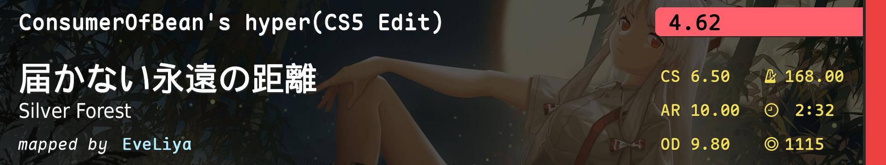 |
6.5 |
7.7 |
9.80 |
10.00 |
2:32 (1115x) |
168.00 |
4.62 |
小圈（flow） |
| 12 |
3228526 |
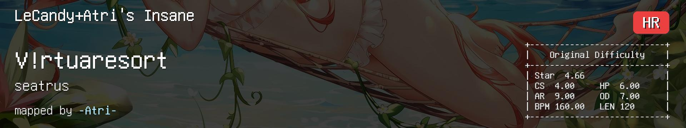 |
5.2 |
8.4 |
9.80 |
10.00 |
2:00 (824x) |
160.00 |
4.88 |
light tech |
| 13 |
359869 |
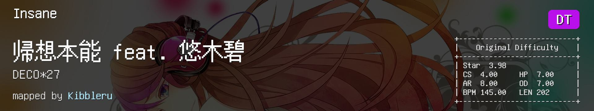 |
4.0 |
7.0 |
9.11 |
9.67 |
2:14 (931x) |
217.50 |
5.44 |
常规 |
| 14 |
3910959 |
|
3.5 |
4.0 |
9.11 |
9.67 |
2:33 (1161x) |
243.00 |
5.39 |
高速 |
| 15 |
3947486 |
 |
3.7 |
4.5 |
8.91 |
9.67 |
1:54 (865x) |
226.50 |
5.43 |
手控aim |
| 16 |
4545402 |
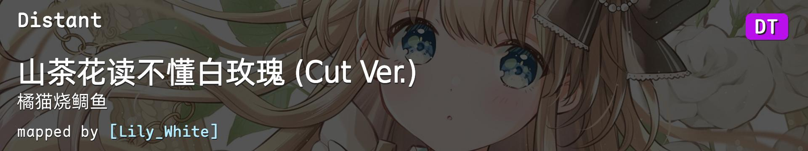 |
4.0 |
5.0 |
8.44 |
9.67 |
1:54 (573x) |
104.32 |
4.77 |
DT gimmick |
| 17 |
4567999 |
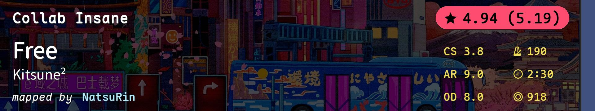 |
3.8 |
6.0 |
8.00 |
9.00 |
2:30 (918x) |
190.00 |
4.94(5.19) |
stamina |
| 18 |
2691754 |
 |
5.0 |
6.0 |
7.00 |
8.00 |
2:40 (949x) |
170.00 |
4.54(5.2) |
antimod |
| 19 |
4503685 |
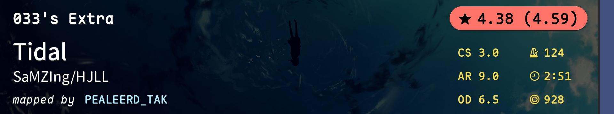 |
3.0 |
6.0 |
6.50 |
9.00 |
2:51 (928x) |
124.00 |
4.38(4.59) |
大圈 |
| 20 |
1922594 |
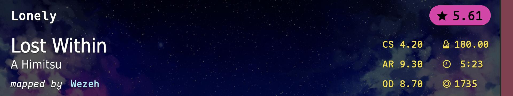 |
4.2 |
5.0 |
8.70 |
9.30 |
5:23 (1735x) |
180.00 |
5.61 |
当心中途走路睡着 |